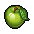

Green apple
| Green apple | |
|---|---|
 | |
General Information
| |
Type :
|
Forageable plant |
Stack size:
|
30 |
Base Cost :
|
|
Consumable Information
| |
Effects :
|
+ |
Source(s)
| |
| Apple trees | |
Technical Information
| |
Internal name:
|
fruit:apple_green_crop |

Green apples are a consumable food item, harvested from apple trees found near the lighthouse. These apples can be used directly to restore  5. Unlike red apples, they do not have any other use.
5. Unlike red apples, they do not have any other use.
Source
| After Harvesting |
Before 6:00 |
After 6:00 |
After 12:00 |
After 18:00 |
After 24:00 |
After 30:00+ |
|---|---|---|---|---|---|---|
| Apple Tree (Orchard) |
Barren | Flowering | 15× Red apple | |||
| Apple Tree (Lighthouse) |
Barren | Flowering | 4× Green apple |
4× Red apple | ||
| ||||||||||||||